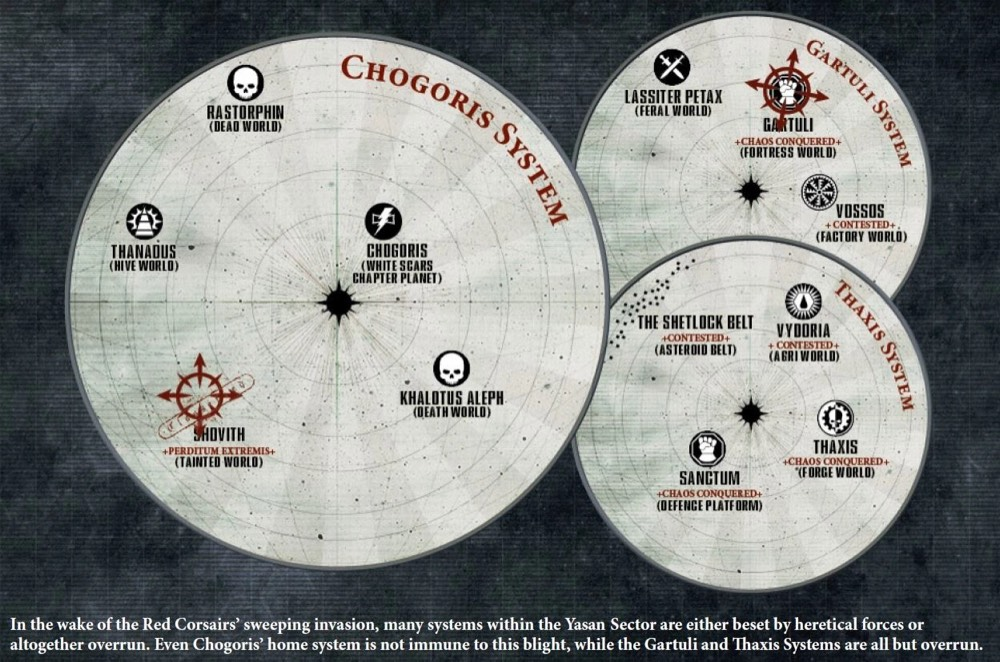

Chogoris
| Chogoris | |
|---|---|
| Mundus Planus; homeworld of the White Scars | |
 Chogoris from orbit, in a survey of the White Scars | |
| System | Chogoris System, Yasan Sector |
| Segmentum | Segmentum Ultima, near the Maelstrom |
| Classification | Feral world; Chapter world |
| Ruler | The Great Khan of the White Scars (Jubal Khan since 943.M41) |
| Fortress | Quan Zhou, on the highest peak of the Khum Karta |
| Compliance | 865.M30, with the discovery of Jaghatai Khan |
| Notable events | Fall of the Palatine (before 865.M30); Blooding (875.M30); Necron attack (890.M41); War for Chogoris (999.M41–early M42) |
Chogoris, recorded by Imperial astrocartographers as Mundus Planus, is a feral world of the Yasan Sector in the Segmentum Ultima and the homeworld of the White Scars. It is the world on which the primarch Jaghatai Khan grew up among the horse tribes of its steppe, united them, and overthrew the empire of the Palatine, shortly before the Emperor and Horus found him in 865.M30.[1][2]
The White Scars have recruited from its tribes for more than ten thousand years. Their fortress-monastery, Quan Zhou, stands on the highest summit of the Khum Karta mountains. Chogoris lies near the Maelstrom, and in the Era Indomitus it was besieged by the Red Corsairs of Huron Blackheart in the War for Chogoris.[3][4]
Geography
[edit]
Chogoris has wide temperate grasslands, mountain ranges and settled lowlands. The great steppe west of the old Palatine empire is called the Empty Quarter: a wind-swept plain where nomadic tribes follow their herds between summer pastures and winter valleys in the Khum Karta, "the mountains that scrape the stars". The east of the main continent held the cities of the Palatine, a feudal empire of armoured horsemen and walled cities.[2]
The Chogoris System also holds a forge world, a shrine world, a dead world and other bodies listed in the White Scars' charts. The neighbouring Gartuli and Thaxis systems fell to the Red Corsairs in the War for Chogoris.[4]
History
[edit]The Palatine and the Empty Quarter
[edit]Chogoris was settled before the Age of Strife (c. M25–M30) and fell back to a feudal level. By the late 30th millennium its east was ruled by the Palatine, whose nobles hunted the steppe tribes for sport and took them as slaves. White Scars scripture describes blood rites and sacrifices at the Palatine's court, and some Imperial scholars believe the empire worshipped the Dark Gods.[2][a]
Jaghatai Khan
[edit]Jaghatai's capsule came to rest near the Quonon River in about 792.M30. Ong Khan, chief of the small Talskar tribe, took the child as a gift of the gods and named him Jaghatai. When Ong Khan was killed by the rival Kurayed tribe, Jaghatai led the Talskars to destroy them and swore to end the tribes' wars with one another. He fought hundreds of battles, bound the tribes into a single confederacy and an army called the Mathuli, and mixed their warriors so that old loyalties gave way to loyalty to him.[2][1]
When a hunting party led by the Palatine's son seized him, Jaghatai killed it and sent back the son's head with a message that the steppe people were no longer the Palatine's playthings. The Palatine marched west with a great army and was beaten. Jaghatai then conquered the Palatine's cities one by one, offering surrender or destruction, until the people of the capital killed the Palatine themselves and gave his head to the Khan. His conquest was complete less than six months before the Emperor arrived.[2][b]
The Great Crusade and the Heresy
[edit]In 865.M30 a fleet of the Luna Wolves carrying the Emperor and Horus reached Chogoris. Jaghatai took command of the V Legion, which became known as the White Scars after the Blooding, the ritual scarring the Legion adopted on Chogoris in 875.M30. Chogorian tribesmen filled its ranks, and the Legion's culture, language and titles came from the steppe. During the Horus Heresy (005–014.M31) the main strength of the Legion was away at Prospero and Terra, and Chogoris itself was held as a recruiting world. After the Heresy, Jaghatai fought the Drukhari around the Yasan Sector until he vanished into the Webway in 084.M31.[1][5]
The 41st millennium
[edit]
In 890.M41 a Necron tomb ship entered orbit and bombarded an empty region of the planet for unknown reasons; the White Scars battle-barge Jaghatai's Pride broke its defences and the defence laser of Quan Zhou destroyed it with a single shot. In 943.M41 Great Khan Kyublai Khan rode out after a Drukhari raid on Chogoris and never returned, and Jubal Khan succeeded him. An Imperial transmission of 991.M41 lists Chogoris as infested by a burrowing xenos species called the Drugh.[3]
The War for Chogoris
[edit]In 999.M41, as the Great Rift opened, the Maelstrom swelled and the Red Corsairs of Huron Blackheart besieged the Yasan Sector. The White Scars withdrew from the Third War for Armageddon and the Agrellan campaign to defend their world. Gartuli and Thaxis fell, and refugees streamed to Chogoris. The Chapter held the planet, and soon after the Red Corsairs withdrew, Battle Group Delphi II of Fleet Tertius of the Indomitus Crusade reached the system with Primaris Space Marines and the Adeptus Mechanicus means to make more. The fighting that continues across the sector is called the Blackheart War.[4][c]
Since the Rift opened, the curse of the Warp has fallen on the tribes too: those showing mutation are killed by their own people, and the Chapter's Stormseers watch for subtler corruption. Successor Chapters such as the Marauders, Rampagers and Destroyers have sent warriors to the Yasan Sector.[4]
Society
[edit]Chogoris remains semi-feudal. It has cities and spaceports, but most of its people live as nomads in the Empty Quarter, armed with bows and swords and hunting with the great hawks called berkuts. The unity Jaghatai imposed did not outlast his departure, and the tribes have fought one another ever since. The pyre-tombs of fallen White Scars in the valleys of the Khum Karta are places of pilgrimage, and young warriors who survive the journey through them are taken as aspirants.[3]
Quan Zhou is said to contain forests stocked with game and streams running through its galleries. It holds the Chapter's records, relics and the great defence laser that destroyed the Necron ship in 890.M41.[3]
Timeline
[edit]| Date | Event |
|---|---|
| c. M25–M30 | Age of Strife; rise of the Palatine |
| c. 792.M30 | Jaghatai arrives; adopted by Ong Khan of the Talskars |
| c. 840–865.M30 (estimated) | Jaghatai unites the tribes and conquers the Palatine |
| 865.M30 | The Emperor and Horus reach Chogoris |
| 875.M30 | The Blooding; the V Legion becomes the White Scars |
| 084.M31 | Jaghatai Khan disappears into the Webway |
| 890.M41 | Necron tomb ship destroyed over Chogoris |
| 943.M41 | Kyublai Khan lost; Jubal Khan becomes Great Khan |
| 991.M41 | Drugh infestation reported |
| 999.M41–early M42 | War for Chogoris; Battle Group Delphi II arrives; the Blackheart War begins |
See also
[edit]Notes
[edit]- ^ The settlement of Chogoris is undated; the Palatine's empire is recorded only in the generations before 865.M30.
- ^ The Khan's wars are dated only as ending shortly before 865.M30; c. 840–865.M30 is an estimate.
- ^ An earlier account credits the relief of Chogoris to Roboute Guilliman and Fleet Primus. The White Scars' own annals say Fleet Tertius arrived after the siege was broken; that version is followed here.
References
[edit]- ^ a b c Liber Primarchus (M32, revised M41). Administratum Archive, Terra.
- ^ a b c d e The Great Khan (M31). White Scars, Quan Zhou.
- ^ a b c d Chronicles of Chogoris (rev. 990.M41). Stormseers of Quan Zhou.
- ^ a b c d Records of the Indomitus Crusade (ongoing). Office of the Lord Commander.
- ^ Chronicles of the Heresy (sealed). Logos Historica Verita, Terra.